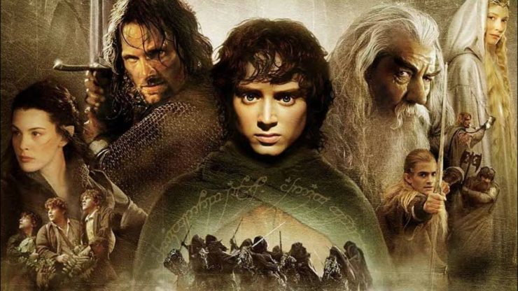

Toto je podnadpis
Pán prsteňov je filmová trilógia režírovaná Petrom Jacksonom. Scenár je založený na knižnej trilógii Pán prsteňov od J. R. R. Tolkiena. Pozostáva z troch filmov Pán prsteňov: Spoločenstvo prsteňa (2001), Pán prsteňov: Dve veže (2002) a Pán prsteňov: Návrat kráľa (2003). Pôvodne predpokladal tím okolo Petra Jacksona nakrútenie dvoch filmov, pretože sa obával, že žiadna spoločnosť nepodstúpi riziko a neinvestuje do troch tak náročných a drahých filmov. V New Line Cinema, jedinej spoločnosti, ktorá bola ochotná investovať do filmov, ale rozhodli, že filmy budú tri, keďže aj knihy sú tri.
